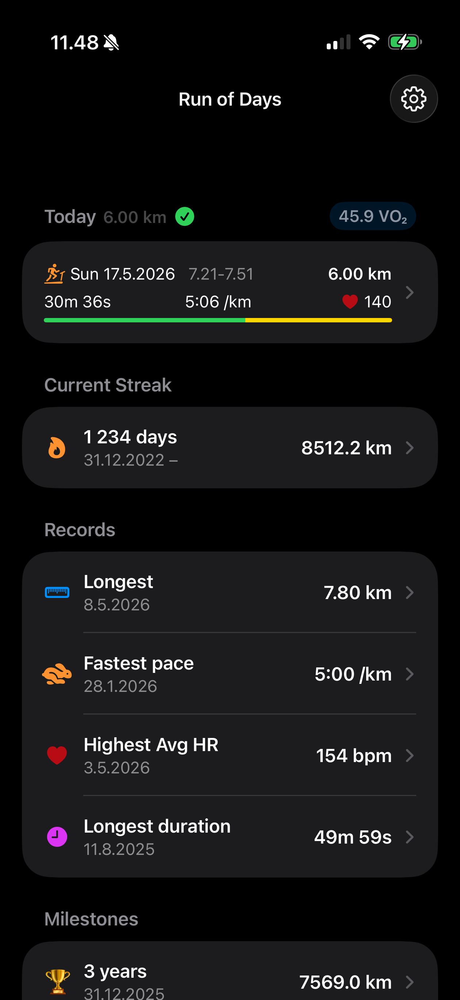
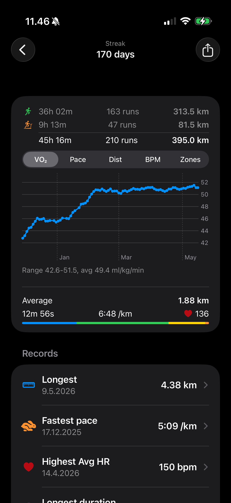
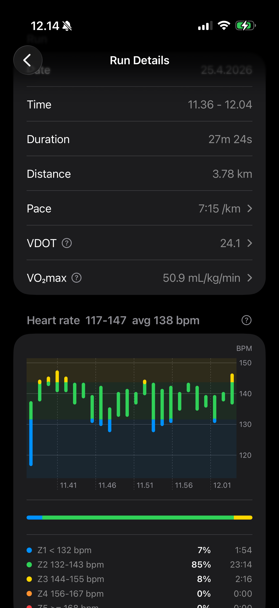
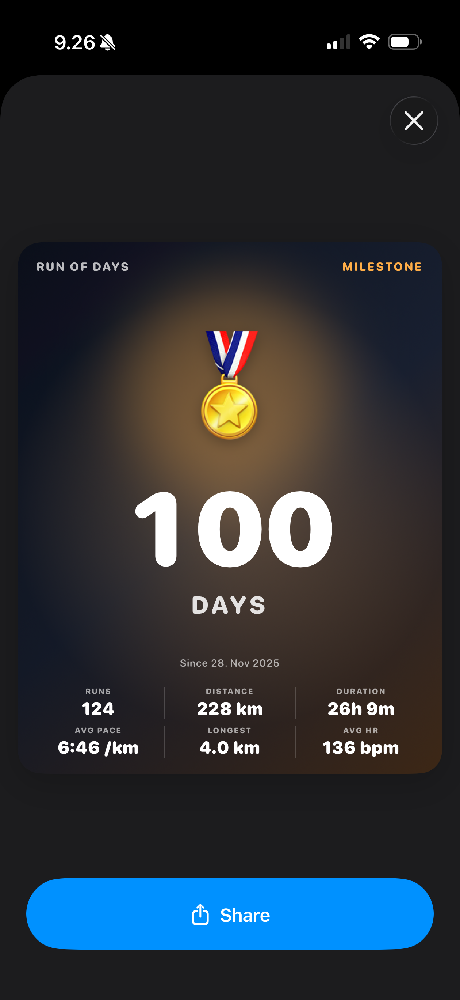

Streaks and milestones
Track current and past streaks, review date ranges, and unlock 7-day, 30-day, 100-day, 200-day, and yearly milestone summaries.
Run of Days
Run of Days reads your Apple Health running workouts and turns them into streaks, milestones, personal records, trend charts, share cards, widgets, and CSV exports. Your Health data stays on your device.
Start from today's status, open the active streak, then drill into individual runs with HealthKit-powered details.




The app focuses on simple running accountability and useful Health data, without accounts, tracking, or remote storage.
Track current and past streaks, review date ranges, and unlock 7-day, 30-day, 100-day, 200-day, and yearly milestone summaries.
Inspect duration, distance, pace, speed, heart rate, elevation, VDOT, VO2max, and race projections. Personal records highlight all-time and per-streak bests.
Switch streak charts between VO2max, pace, distance, BPM, and heart-rate zones. Candle bars show per-bucket min, max, and average at a glance.
Add a Home Screen widget, preview and share streak or milestone cards, and export either a single streak or every recorded run as CSV.